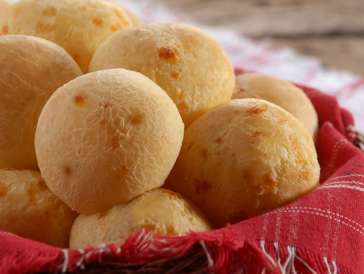

We like it CHEESY!
Ingredients:
- 4 cups tapioca flour
- 1 1/4 cups milk
- 1/2 cup water
- 6 tablespoons oil
- 1 1/2 cups grated parmesan cheese
- 1 cups shredded Mozzarella cheese
- 2 large eggs
- 2 teaspoons salt
Instructions:
- Preheat oven to 400F degrees with a rack in the middle.
- Combine the milk, water, oil and salt in a saucepan and bring to a boil over medium high heat.
- Add the tapioca flour to the bowl of a stand mixer and, once the milk mixture boils, pour it over the flour. Turn the mixer on and mix it well. The texture will be fondant-like, really white and sticky.
- With the mixer still on, add the eggs, one at a time. You will think they won't mix, since the tapioca flour mixture is so sticky, but hang in there cause they will.
- Once the eggs are incorporated, add the cheese, a little at a time, until fully incorporated.
- The dough is supposed to be soft and sticky. However, if you're worried it's too liquidy, add some more tapioca flour. Just don't over do it or your cheese bread will be tough and not too gooey.
- To shape the balls, wet your hands with cold water and, using a spoon, scoop some of the dough to shape balls that are a little smaller than golf-sized.
- Place the balls on a baking sheet covered with parchment paper and bring it to the preheat oven.
- Bake for 15-20 minutes or until they are golden and puffed.
- Serve them warm! :)
Notes
To freeze them, shape the balls, place them on the baking sheet and bring to the freezer. Once they are frozen, transfer to a ziplock bag and keep them in the freezer up to 3 months.
Once you're ready to use them, preheat the oven to 400 as usual and bake the frozen balls for 25 to 30 minutes or until golden and puffy!